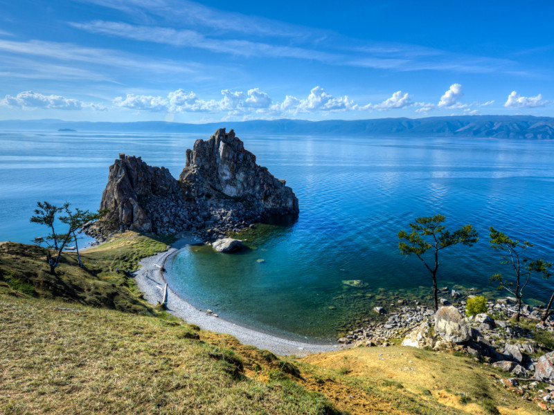
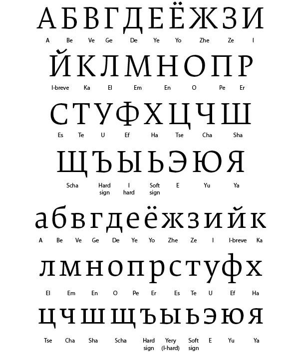
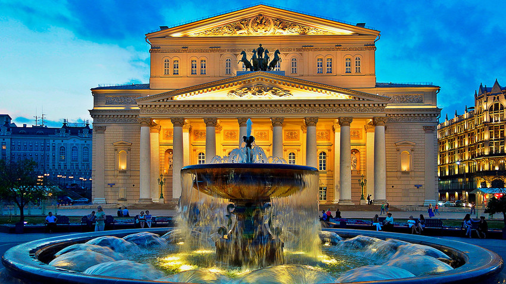

Os primeiros povos da região da Rússia foi habitada desde a pré-história, com evidências de povos nômades e civilizações antigas como os citas, cazares e eslavos. Os eslavos orientais, ancestrais dos russos modernos, estabeleceram-se na região e assimilaram povos fino-úgricos. O primeiro Estado eslavo oriental surgiu no século IX, fundado pelos varegues (vikings escandinavos), liderados por Rurik e Olegue. A Rússia de Kiev prosperou, adotou o cristianismo ortodoxo e desenvolveu um código legal. Entrou em declínio devido a conflitos internos e foi devastada pela invasão mongol em 1237–1240. Sob o jugo mongol, principados como Vladimir-Susdália e Novogárdia mantiveram certa autonomia. Moscóvia emergiu como centro político, derrotando os mongóis na Batalha de Kulikovo (1380) e expandindo seu território. Ivã III libertou-se dos mongóis, unificou terras russas e adotou o título de "Grão-Duque de todas as Rússias". Ivã IV (o Terrível) tornou-se o primeiro czar em 1547, expandindo o território com a conquista de canatos tártaros. A Guerra da Livônia e conflitos com a Crimeia enfraqueceram o czarato. Após a morte de Ivã, seguiu-se o "Tempo de Dificuldades", com crise política e invasões polonesas. A Dinastia Romanov assumiu em 1613, iniciando a recuperação. Pedro, o Grande (1682–1725) modernizou a Rússia, venceu a Suécia na Grande Guerra do Norte e fundou São Petersburgo. Catarina, a Grande (1762–1796) expandiu o império, anexando territórios como a Crimeia. A Rússia derrotou Napoleão em 1812, tornando-se uma potência europeia. No século XIX, enfrentou derrotas como a Guerra da Crimeia (1853–1856) e venceu a Guerra Russo-Turca (1877–1878). A Revolução de Fevereiro (1917) derrubou o czar Nicolau II. Os bolcheviques, liderados por Lenin, tomaram o poder na Revolução de Outubro. A Guerra Civil (1918–1922) entre o Exército Vermelho (comunista) e o Exército Branco (anticomunista) terminou com a vitória bolchevique e a formação da URSS em 1922. Stalin consolidou o poder, promoveu industrialização e coletivização, mas causou repressão (Grande Expurgo) e fomes. Na Segunda Guerra Mundial, a URSS derrotou a Alemanha nazista, tornando-se superpotência. A Guerra Fria contra os EUA levou a conflitos como a Crise dos Mísseis (1962). Reformas de Gorbachev (glasnost e perestroika) falharam, e a URSS dissolveu-se em 1991. Boris Iéltsin liderou a transição para o capitalismo, mas crises econômicas e corrupção marcaram os anos 1990. Vladimir Putin, no poder desde 1999, estabilizou o país, centralizou o poder e expandiu a influência russa. Anexou a Crimeia em 2014 e iniciou a invasão da Ucrânia em 2022, enfrentando sanções internacionais. A Rússia mantém-se como uma potência global, embora com desafios políticos e econômicos. Veja também sobe o idioma.

A Rússia é um país que se estende por grande parte do norte da Eurásia. Composto por grande parte da Europa oriental e do norte da Ásia, é o maior país do mundo em área territorial. Devido ao seu tamanho, a Rússia exibe uma grande diversidade biológica e geográfica. Tal como acontece com a sua topografia, seus climas, vegetação e solos abrangem vastas distâncias. De norte a sul, a planície europeia oriental é revestida majoritariamente pela tundra, florestas de coníferas (taiga), pastagens (estepe) e regiões áridas (no mar Cáspio), enquanto as mudanças na vegetação refletem as mudanças no clima. A Sibéria suporta uma sequência semelhante, mas coberta em sua maior parte pela taiga. O país possui 41 parques nacionais, 101 reservas biológicas e 40 reservas da biosfera da UNESCO. A Rússia tem as maiores reservas florestais do mundo, conhecidas como "os pulmões da Europa", perdendo apenas para a Floresta Amazônica, no montante de dióxido de carbono que absorve. Há 266 espécies de mamíferos e 780 espécies de aves no país. Um total de 415 espécies de animais foram incluídos no Livro Vermelho da Federação da Rússia em 1997 e agora estão protegidos. Veja dados gerais.
O idioma oficial da Rússia é o russo, que utiliza o alfabeto cirílico. É uma língua eslava oriental e possui uma rica tradição literária.
Привет
("Privet" significa "Olá")

A cultura russa é marcada por uma rica tradição em literatura, música, dança e artes visuais. Destacam-se escritores como Dostoiévski e Tolstói, compositores como Tchaikovsky, e o famoso balé russo. A diversidade étnica do país contribui para uma variedade de expressões culturais. Voltar para história.
| População | Área | Moeda |
|---|---|---|
| ~145 milhões | 17.098.242 km² | Rublo Russo |
| Idioma: Russo | Continente: Europa/Ásia |